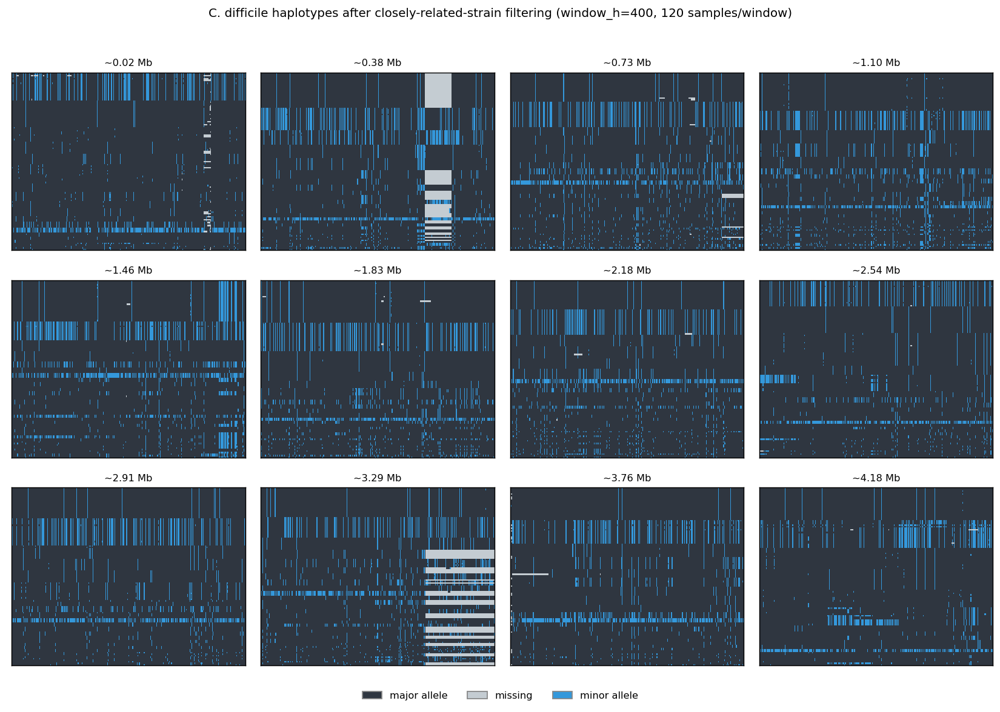
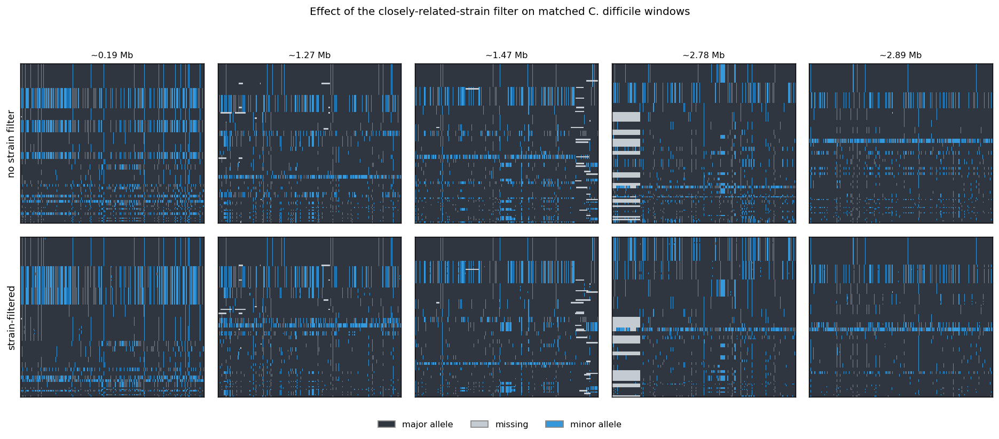
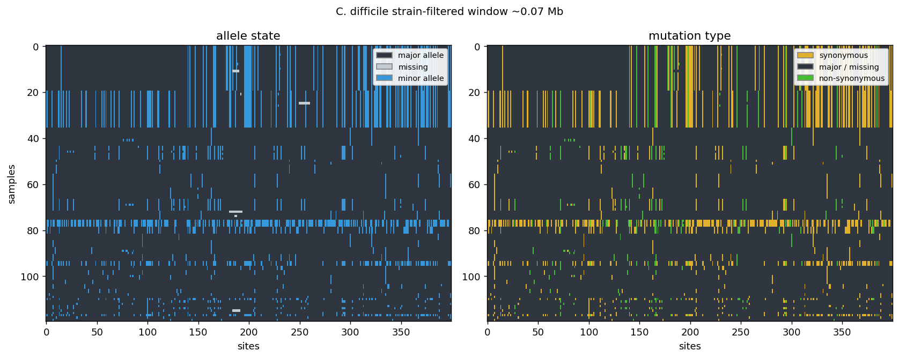
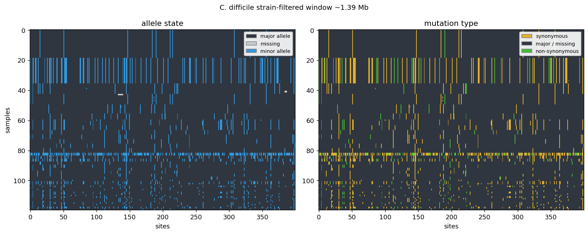
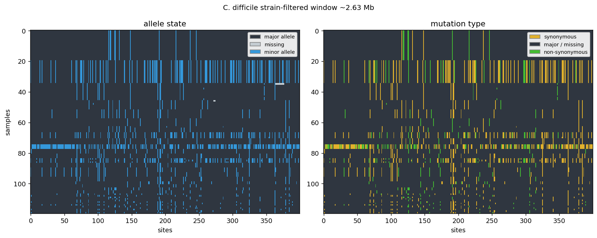
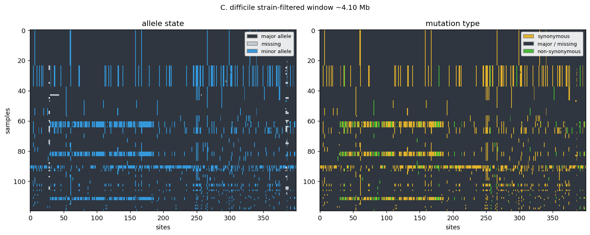

Each image is one CNN input window: 120 C. difficile genomes (rows)
× 400 polymorphic sites (columns), the same window width and sample
count used for the Clostridioides difficile strain filtered
scan in the tool. Before a window is built, genomes are drawn with a cap of
one genome per whole-genome relatedness cluster (<1% pairwise divergence),
and the haplotype rows are clustered on minor alleles at ≥20% frequency
with a missing-data-aware distance. Rows are ordered by similarity, so shared
haplotype backgrounds appear as horizontal bands.
Strain-filtered windows across the genome

Twelve windows evenly spaced along the ~4.18 Mb genome, taken from the
dense per-site scan. Allele-state channel: dark = major allele,
light grey = missing, blue = minor allele.
Effect of the closely-related-strain filter

The same five genomic windows sampled without the strain filter (top) and
with it (bottom). The per-window cluster cap removes some near-duplicate
rows; most of C. difficile’s block-like structure comes from
genome-wide linkage rather than literal near-duplicate strains, so the
remaining difference is modest — narrowing the window is what most
changes how the CNN scores these windows.
Individual windows, both channels




Left panel of each pair is the allele-state channel; right panel is the
mutation-type channel (gold = synonymous, green = non-synonymous, dark =
major/missing).
How this connects to the scan
A CNN trained on 400-site simulated windows and applied to these
strain-filtered C. difficile windows calls the genome
~60% Neutral / ~19% Hard / ~22% Soft, versus ~13% Neutral / ~65% Hard
for the original 1114-site model. Load
Clostridioides difficile strain filtered in the scan tool
to see the per-window calls.